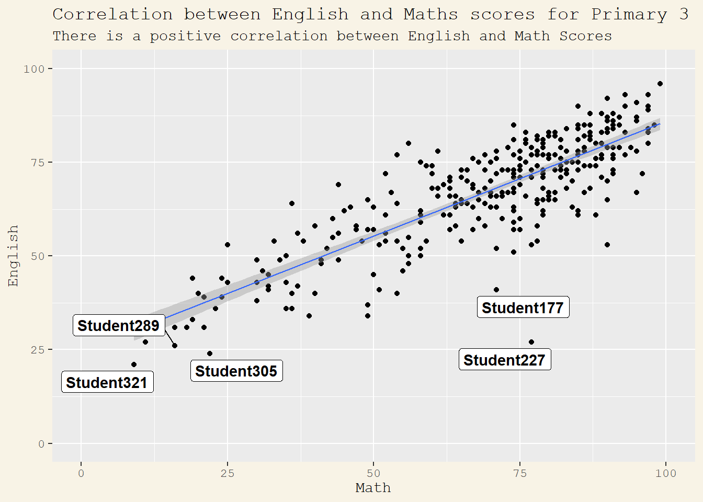
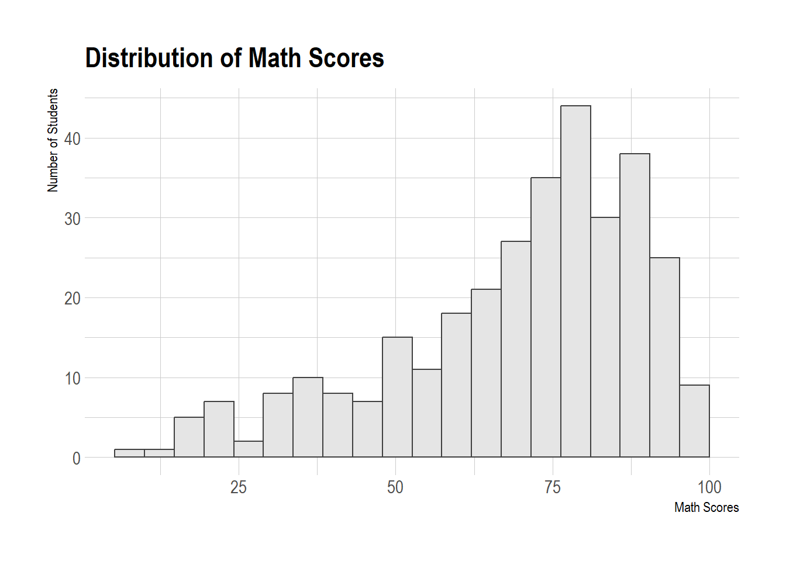
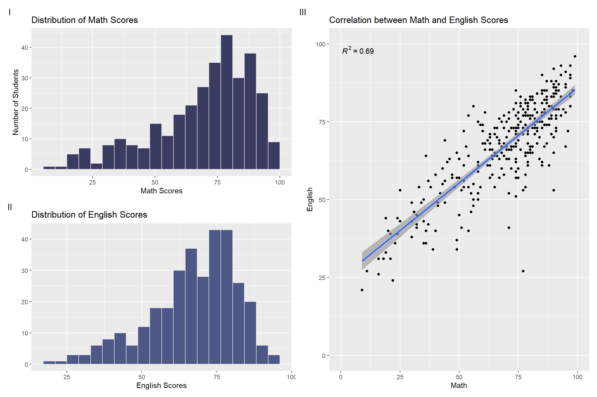
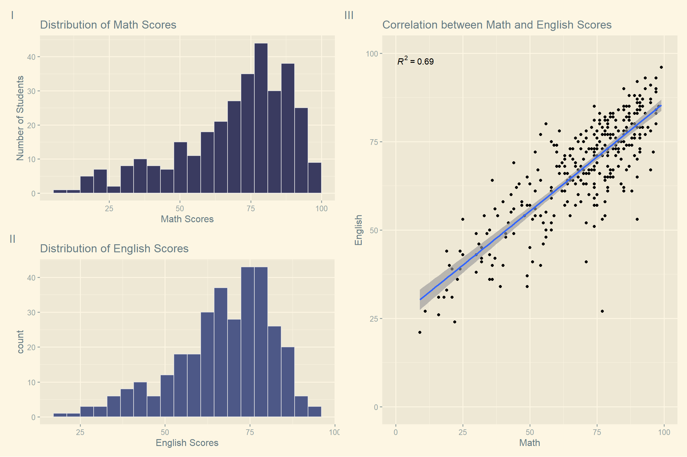
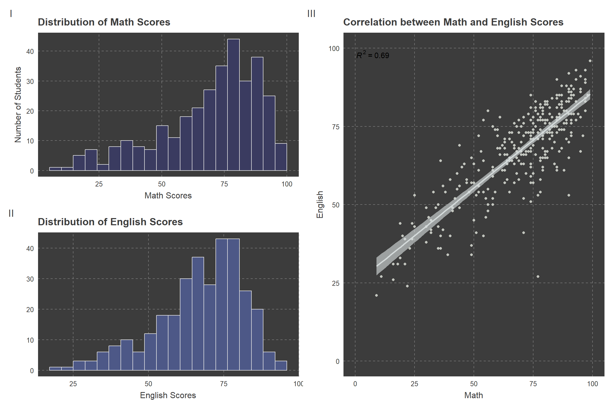
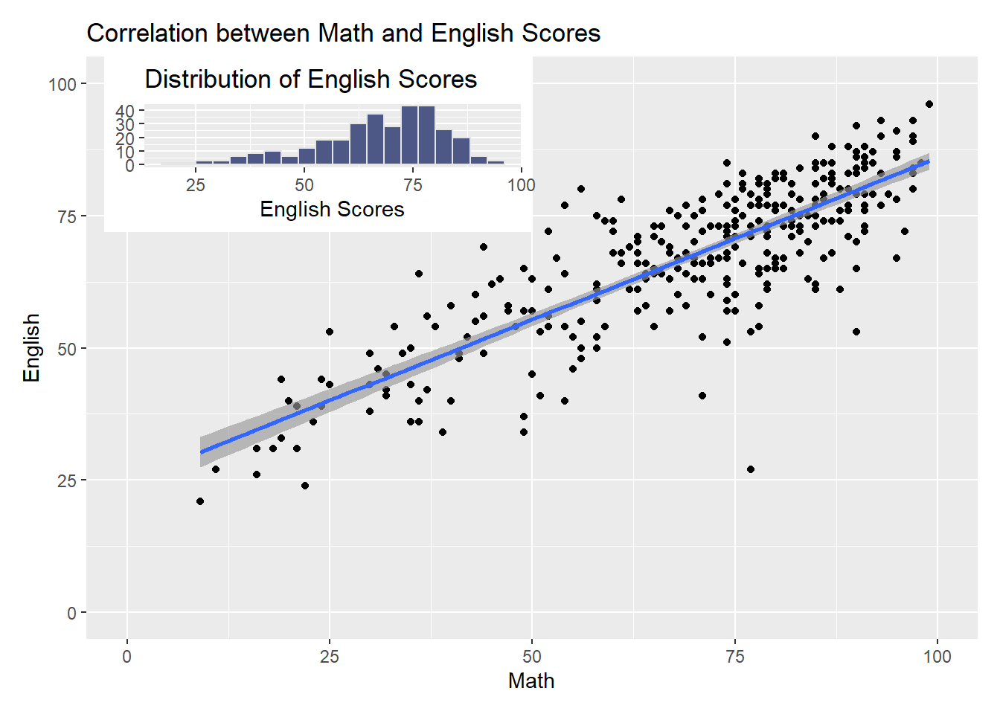

pacman::p_load(ggrepel, patchwork, ggpmisc,
ggthemes, hrbrthemes, InraeThemes, ggthemr,
tidyverse) Hands on Exercise 2
Load and Install R Packages
Importing the data
exam_data <- read_csv("data/Exam_data.csv")Overview of the data
summary(exam_data) ID CLASS GENDER RACE
Length:322 Length:322 Length:322 Length:322
Class :character Class :character Class :character Class :character
Mode :character Mode :character Mode :character Mode :character
ENGLISH MATHS SCIENCE
Min. :21.00 Min. : 9.00 Min. :15.00
1st Qu.:59.00 1st Qu.:58.00 1st Qu.:49.25
Median :70.00 Median :74.00 Median :65.00
Mean :67.18 Mean :69.33 Mean :61.16
3rd Qu.:78.00 3rd Qu.:85.00 3rd Qu.:74.75
Max. :96.00 Max. :99.00 Max. :96.00 Plotting Practice
1: Annotations with ggrepel
A comparison between annotations using geom_label(), geom_text() and package ggrepel
ggplot(data=exam_data,
aes(x= MATHS,
y=ENGLISH)) +
geom_point() +
geom_smooth(method=lm,
linewidth=0.5,
formula = y~x) +
geom_label_repel(aes(label = ID),
fontface="bold") +
coord_cartesian(xlim=c(0,100),
ylim=c(0,100)) +
labs(x="Math",
y="English",
title="Correlation between English and Maths scores for Primary 3",
subtitle="There is a positive correlation between English and Math Scores") +
theme(text=element_text(family="mono"),
plot.background=element_rect(fill="#F8F3E6",colour="#F8F3E6"))
ggplot(data=exam_data,
aes(x= MATHS,
y=ENGLISH)) +
geom_point() +
geom_smooth(method=lm,
linewidth=0.5,
formula = y~x) +
geom_label(aes(label = ID),
hjust = .5,
vjust = -.5) +
coord_cartesian(xlim=c(0,100),
ylim=c(0,100)) +
labs(x="Math",
y="English",
title="Correlation between English and Maths scores for Primary 3",
subtitle="There are too many annotations to see the points clearly") +
theme(plot.background=element_rect(fill="#F8F3E6",colour="#F8F3E6"))
2: Customising themes
2.1: ggtheme package

ggplot(data=exam_data,
aes(x = MATHS)) +
geom_histogram(bins=20,
boundary = 100,
color="grey25",
fill="grey90") +
labs(x = "Math Scores",
y = "No. of Students",
title = "Distribution of Math Scores") +
theme_economist()2.2: hbrthemes package

ggplot(data=exam_data,
aes(x = MATHS)) +
geom_histogram(bins=20,
boundary = 100,
color="grey25",
fill="grey90") +
labs(x = "Math Scores",
y = "No. of Students",
title = "Distribution of Math Scores") +
theme_ipsum()
ggplot(data=exam_data,
aes(x = MATHS)) +
geom_histogram(bins=20,
boundary = 100,
color="grey25",
fill="grey90") +
labs(x = "Math Scores",
y = "Number of Students",
title = "Distribution of Math Scores") +
theme_ipsum(axis_title_size = 18,
base_size = 12,
grid = "Y")3: Composite Graphs
3.1 Combining 2 graphs: ‘+’ operator
p1 <- ggplot(data=exam_data,
aes(x = MATHS)) +
geom_histogram(bins=20,
boundary = 100,
color="grey90",
fill="#3A3B60") +
labs(x = "Math Scores",
y = "Number of Students",
title = "Distribution of Math Scores")
p2 <- ggplot(data=exam_data,
aes(x = ENGLISH)) +
geom_histogram(bins=20,
boundary = 100,
color="grey90",
fill="#4d5887") +
labs(x = "English Scores",
title = "Distribution of English Scores") +
theme(axis.title.y = element_blank())
p1 + p23.2 Combining 3 graphs: ‘|’, ‘/’, ‘()’
Use different operators to specify composition
- “|” operator to stack two ggplot2 graphs
- “/” operator to place the plots beside each other
- “()” operator defines the sequence of the plotting
p3 <- ggplot(data=exam_data,
aes(x= MATHS,
y=ENGLISH)) +
geom_point() +
geom_smooth(method=lm,
linewidth=0.5,
formula = y~x) +
stat_poly_line() +
stat_poly_eq() +
coord_cartesian(xlim=c(0,100),
ylim=c(0,100)) +
labs(x="Math",
y="English",
title="Correlation between Math and English Scores")
(p1/p2) | p33.3: Adding Annotations
((p1 / p2) | p3) +
plot_annotation(tag_levels = 'I')
Applying themes to composite
theme_economist()
patchwork <- ((p1 / p2) | p3) +
plot_annotation(tag_levels = 'I')
patchwork & theme_economist()theme_inrae()
patchwork <- ((p1 / p2) | p3) +
plot_annotation(tag_levels = 'I')
patchwork & theme_inrae()
theme_solarized_2()
patchwork <- ((p1 / p2) | p3) +
plot_annotation(tag_levels = 'I')
patchwork & theme_solarized_2()
ggthemr: chalk
ggthemr("chalk")
patchwork <- ((p1 / p2) | p3) +
plot_annotation(tag_levels = 'I')
patchwork
3.4: Inset Figures
Using inset_element() to place a plot within another plot
ggthemr_reset()
p3 + inset_element(p2,
left = 0.02,
bottom = 0.7,
right = 0.5,
top = 1)